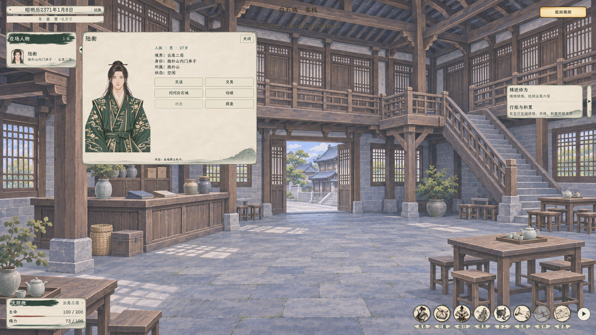
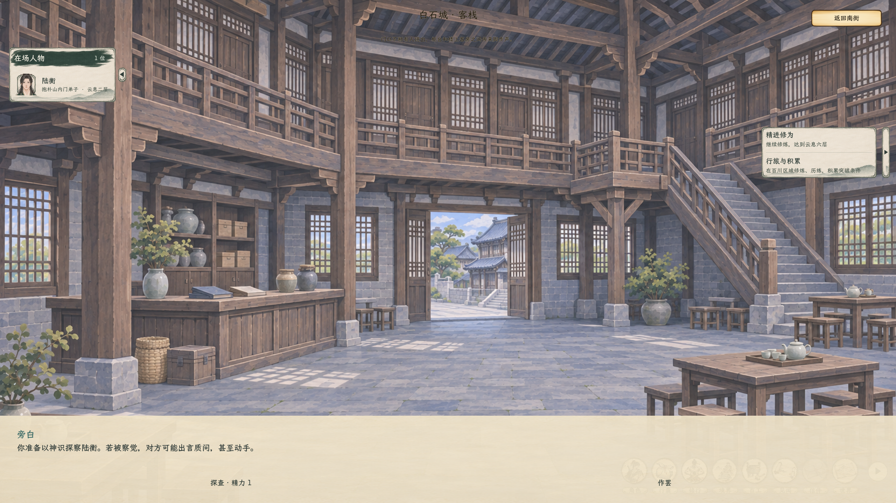
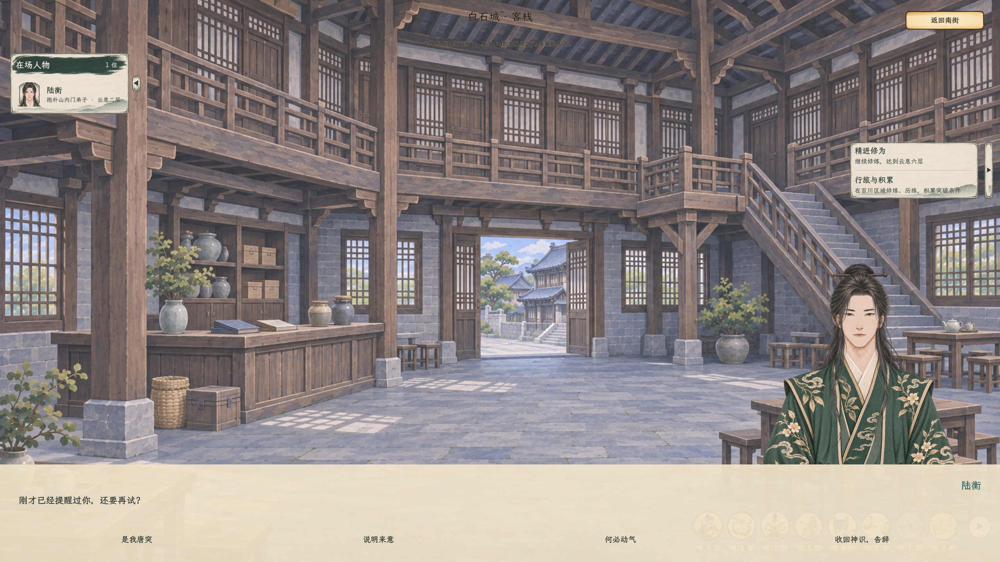
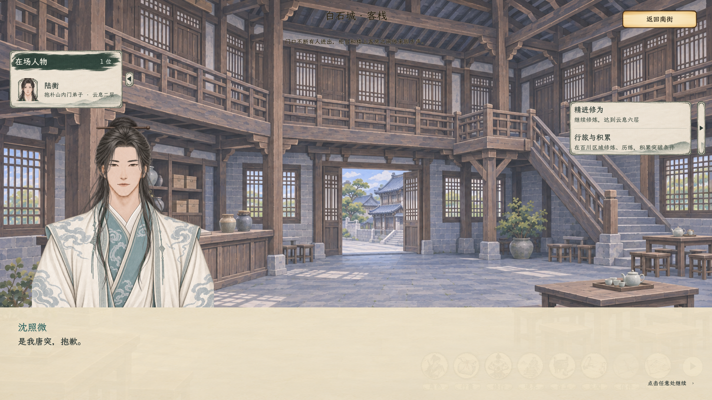
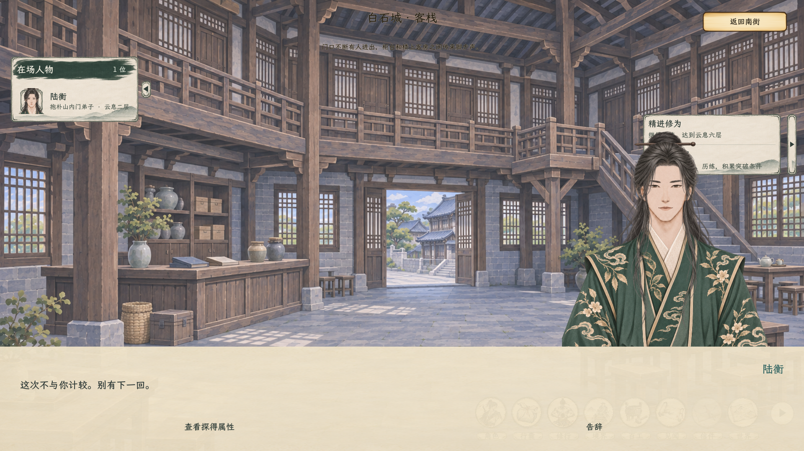
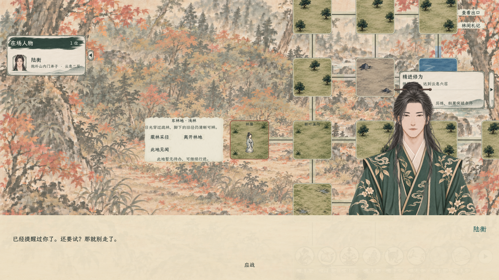
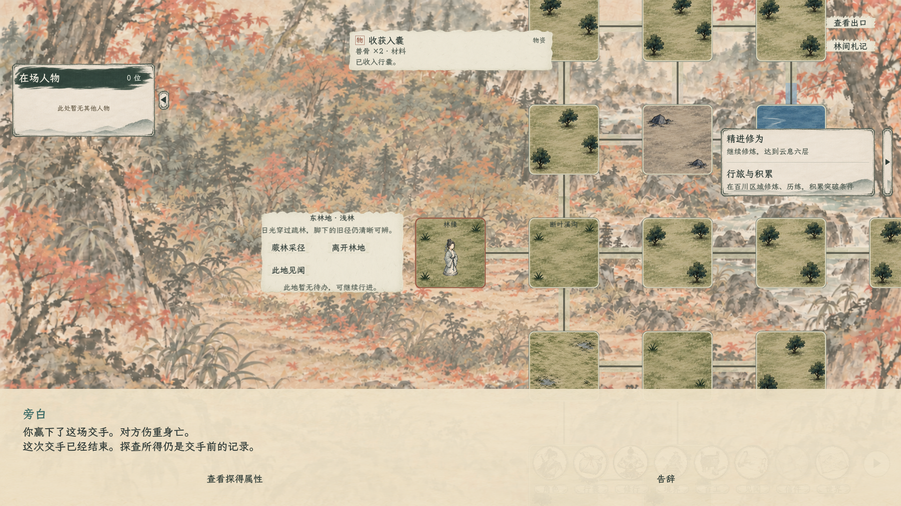
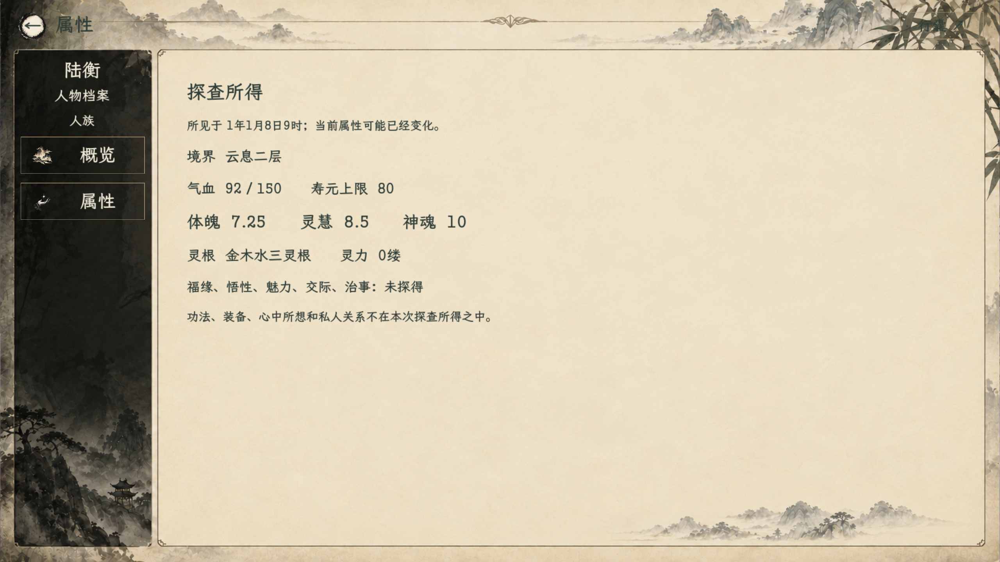
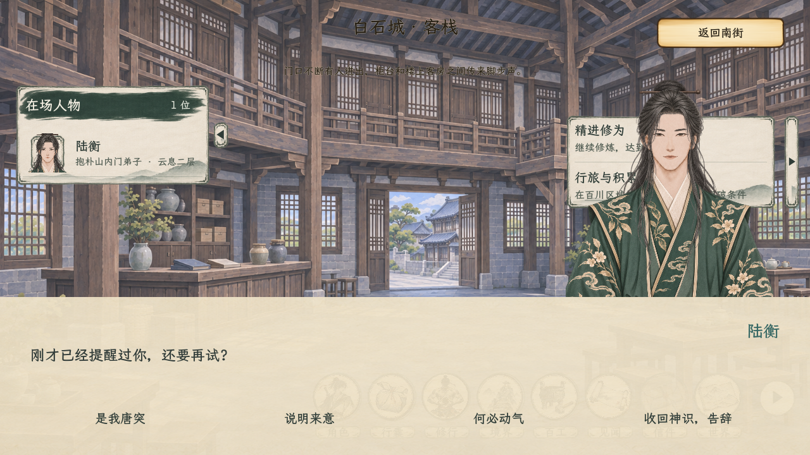

探查与屏幕下方剧情对话框
小人物页只保留资料和操作；对话复用原来的屏幕下方剧情框。以下均为隔离测试中的原生画面，点击可看原尺寸。

原人物名单与小页中的探查入口，身份使用真实公开名头。

探查确认也在下方，尚未确认不扣精力。

白石城被发现后在底部质问，人物小页收起；禁斗规则压住动手。

玩家说自己的话，并切换玩家立绘。

说完再切回NPC回应，不把双方发言放进小页的一段文字。

在真实林地允许交手的地点，性情和旧事可使NPC出手，随后进入原正式战场。

反击结束回原历练场景；伤亡保存，探查记录仍可查看。

成功后的属性页标明所见时间，后来免费打开不会刷新当前属性。

1280×720下仍使用底部剧情框。